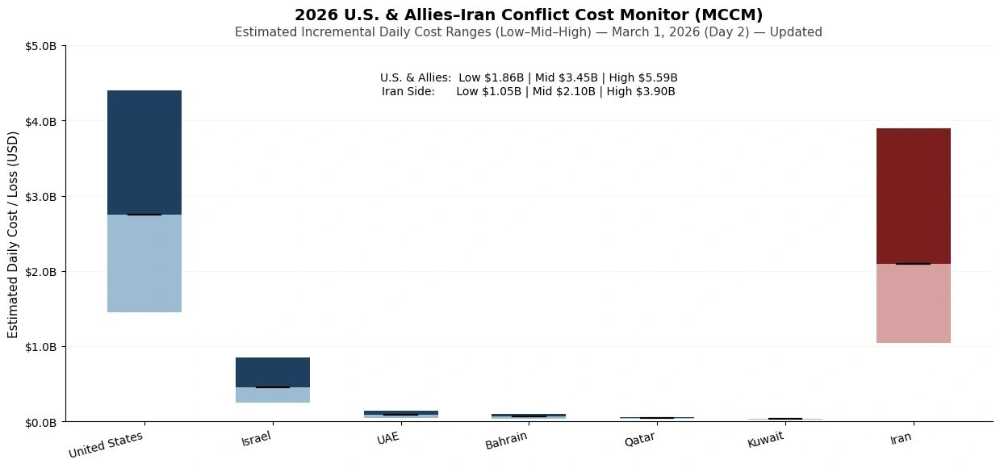
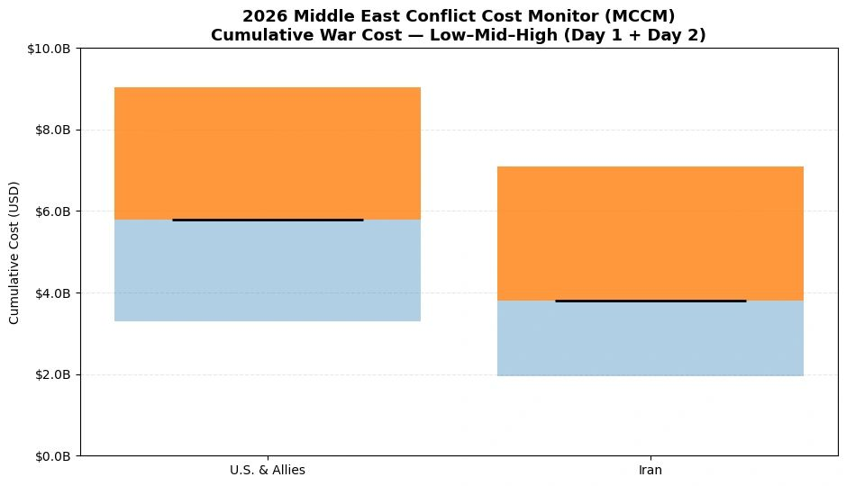

2026 U.S. & Allies–Iran Conflict Cost Monitor (MCCM): March 1
Powered by AIPAMS
Introduction
The 2026 Middle East Conflict Cost Monitor (MCCM) provides an event-driven, scenario-based assessment of daily war-related expenditures and losses across major actors involved in the conflict. Using a structured low–mid–high estimation framework, the series aggregates publicly available operational indicators, force posture changes, strike intensity proxies, and reported material damage to produce comparable daily cost ranges.
MCCM is designed as a rolling monitoring instrument rather than a definitive accounting ledger. All estimates are expressed in current U.S. dollars (USD) and reflect scenario-based approximations intended for comparative analysis and policy discussion.

Note:
Bars represent estimated daily war-related cost ranges under low, mid, and high scenarios. The lower (lighter) segment indicates the Low–Mid range, the upper (darker) segment indicates the Mid–High range, and the black horizontal marker denotes the midpoint (Mid) estimate. Columns are displayed as floating range bars beginning at the low estimate rather than zero to emphasize scenario variability. Bloc-level totals (U.S. & Allies; Iran side) reflect the sum of national estimates and are intended for comparative scenario analysis rather than precise accounting. All values are expressed in current U.S. dollars (USD).

Selected References:
Anadolu Agency. (2026, March 1). Regional missile interceptions reported across Gulf states amid escalation. Retrieved from https://www.aa.com.tr
Bahrain National Communication Centre. (2026, February 28). Statement on missile interceptions over Bahraini airspace. Manama: Government of Bahrain. Retrieved from https://www.bna.bh
Belasco, A. (2014). The cost of Iraq, Afghanistan, and other global war on terror operations since 9/11. Washington, DC: Congressional Research Service. Retrieved from https://crsreports.congress.gov/product/pdf/RL/RL33110
Congressional Budget Office. (2023). The cost of U.S. military deployments to the Middle East. Washington, DC: U.S. Government Publishing Office. Retrieved from https://www.cbo.gov/publication/59030
Council on Foreign Relations. (2025). U.S. military presence in the Middle East. New York, NY: CFR. Retrieved from https://www.cfr.org/backgrounder/us-military-presence-middle-east
Defense Intelligence Agency. (2019). Iran military power: Ensuring regime survival and securing regional dominance. Washington, DC: U.S. Department of Defense. Retrieved from https://www.dia.mil/Portals/110/Documents/News/Military_Power_Publications/Iran_Military_Power_FINAL.pdf
International Institute for Strategic Studies. (2025). The military balance 2025. London: IISS. Retrieved from https://www.iiss.org/publications/the-military-balance
International Institute for Strategic Studies. (2025). Iran military capability assessment. London: IISS. Retrieved from https://www.iiss.org/publications/strategic-dossiers/iran
International Monetary Fund. (2024). Oil price volatility and geopolitical risk. Washington, DC: IMF. Retrieved from https://www.imf.org/en/Publications/WP/Issues/2024/02/01/Oil-Price-Volatility-and-Geopolitical-Risk-533987
Jerusalem Post. (2026, March 1). Missile strikes reported near Jerusalem suburbs; casualties confirmed. Retrieved from https://www.jpost.com
Kuwait News Agency. (2026, February 28). Drone strike reported near Kuwait International Airport; minor injuries confirmed. Kuwait City: Government of Kuwait. Retrieved from https://www.kuna.net.kw
Organisation for Economic Co-operation and Development. (2022). Public governance and crisis cost accounting frameworks. Paris: OECD Publishing. Retrieved from https://www.oecd.org/governance/public-governance-and-crisis-management
Organisation for Economic Co-operation and Development. (2023). Guidelines for scenario-based policy cost estimation. Paris: OECD Publishing. Retrieved from https://www.oecd.org/gov/budgeting/scenario-based-policy-cost-estimation
Office of the Under Secretary of Defense (Comptroller). (2024). Department of Defense budget justification materials, FY2025. Washington, DC: U.S. Department of Defense. Retrieved from https://comptroller.defense.gov/Budget-Materials
Qatar Ministry of Defense. (2026, February 28). Official statement on missile interceptions. Doha: Government of Qatar. Retrieved from https://www.mod.gov.qa
RAND Corporation. (2019). Costs of sustaining U.S. overseas military presence. Santa Monica, CA: RAND Corporation. Retrieved from https://www.rand.org/pubs/research_reports/RR200.html
Reuters. (2026, March 1). U.S. says it sinks Iranian warship amid regional escalation. https://www.reuters.com/world/middle-east/us-says-it-sinks-iranian-warship-2026-03-01/
Reuters. (2026, March 1). Three tankers damaged in Gulf as U.S.-Iran conflict escalates. https://www.reuters.com/business/energy/three-tankers-damaged-gulf-us-iran-conflict-escalates-2026-03-01/
SIPRI. (2025). SIPRI military expenditure database. Stockholm: Stockholm International Peace Research Institute. Retrieved from https://www.sipri.org/databases/milex
Stockholm International Peace Research Institute. (2025). Iran military expenditure data. Stockholm: SIPRI. Retrieved from https://www.sipri.org/databases/milex
Taleb, N. N. (2007). The black swan: The impact of the highly improbable. New York, NY: Random House.
Tasnim News Agency. (2026, March 1). IRGC air defense announces downing of U.S. MQ-9 drone in southern Iran. Retrieved from https://www.tasnimnews.com
The Times of Israel. (2026, March 1). Israeli Air Force confirms over 1,200 munitions used in first-day strikes. Retrieved from https://www.timesofisrael.com
Tribune Pakistan. (2026, February 28). Iran claims it destroyed U.S. missile-tracking radar in Qatar. https://tribune.com.pk/story/2595066/iran-claims-it-destroyed-us-missile-tracking-radar-in-qatar
U.S. Central Command. (2025). Area of responsibility overview. Tampa, FL: U.S. Department of Defense. Retrieved from https://www.centcom.mil/ABOUT-US
U.S. Department of Defense. (2024). Reimbursable rates for DoD flying hours and support services. Washington, DC: DoD Financial Management Regulation. Retrieved from https://comptroller.defense.gov/Financial-Management-Regulation
U.S. Department of Defense. (2026). Operational updates in the U.S. Central Command area of responsibility. Washington, DC: U.S. Department of Defense. Retrieved from https://www.defense.gov/News
United Arab Emirates Ministry of Defense. (2026, February 28). Official statement regarding ballistic missile interception over Abu Dhabi. Abu Dhabi: Government of the UAE. Retrieved from https://www.mod.gov.ae
Washington Post. (2026, March 1). Escalation spreads across Gulf bases following coordinated strikes. Retrieved from https://www.washingtonpost.com
World Bank. (2023). Conflict damage and loss assessment methodologies. Washington, DC: World Bank. Retrieved from https://www.worldbank.org/en/topic/fragilityconflictviolence
World Bank. (2024). Macroeconomic consequences of regional conflict escalation. Washington, DC: World Bank. Retrieved from https://www.worldbank.org
Share this post: